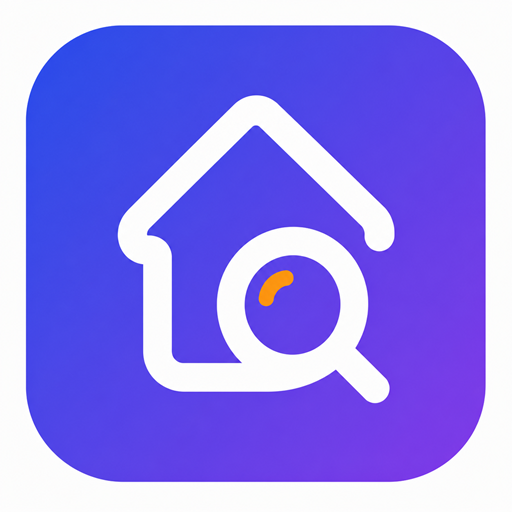

Privacy Policy
Dove l'ho messo?
Ultimo aggiornamento: 19 luglio 2026
Introduzione
La presente informativa descrive come l'applicazione Dove l'ho messo? gestisce le informazioni dell'utente e le autorizzazioni richieste dal dispositivo.
L'app non richiede la creazione di un account e non utilizza server gestiti dallo sviluppatore per raccogliere o archiviare i contenuti inseriti nell'app.
Dati conservati sul dispositivo
Le informazioni inserite nell'app vengono memorizzate localmente sul dispositivo dell'utente. Queste informazioni possono includere:
- nomi e descrizioni degli oggetti;
- abitazioni, stanze e contenitori;
- categorie, tag e note;
- fotografie associate agli oggetti;
- storico delle posizioni degli oggetti;
- preferenze e impostazioni dell'app.
Lo sviluppatore non può accedere direttamente a questi contenuti.
Fotocamera e libreria fotografica
L'app può richiedere l'accesso alla fotocamera o alla libreria fotografica esclusivamente per consentire all'utente di associare un'immagine agli oggetti registrati.
L'accesso avviene soltanto dopo l'autorizzazione dell'utente. Le immagini selezionate o acquisite vengono conservate localmente e non sono inviate a server gestiti dallo sviluppatore.
Microfono e riconoscimento vocale
L'app può richiedere l'accesso al microfono e al riconoscimento vocale per trasformare la voce dell'utente in testo e facilitare l'inserimento degli oggetti e delle relative posizioni.
La funzione viene attivata soltanto su iniziativa dell'utente. Il riconoscimento vocale è gestito dai servizi messi a disposizione dal sistema operativo del dispositivo. A seconda del dispositivo, delle impostazioni e del servizio utilizzato, l'audio potrebbe essere elaborato da Apple o Google secondo le rispettive informative sulla privacy.
Lo sviluppatore non riceve né conserva registrazioni audio sui propri server.
Backup ed esportazione
L'app consente all'utente di creare, esportare e ripristinare copie di backup contenenti i dati e le immagini salvati nell'app.
La creazione e la condivisione dei backup avvengono esclusivamente su iniziativa dell'utente. L'utente sceglie personalmente dove salvare o con chi condividere il file.
Lo sviluppatore non riceve automaticamente copie dei backup. L'utente è responsabile della loro conservazione e protezione.
Acquisti in-app
L'app può offrire un acquisto in-app non consumabile per sbloccare le funzionalità Premium.
Pagamenti, ricevute e ripristino degli acquisti sono gestiti da Apple App Store o Google Play, a seconda della piattaforma. Lo sviluppatore non riceve i dati completi della carta di pagamento.
Servizi di terze parti
Alcune funzionalità possono utilizzare servizi forniti dal sistema operativo e dagli store digitali, tra cui:
- Apple App Store e servizi Apple;
- Google Play e servizi Google;
- servizi di riconoscimento vocale del dispositivo;
- funzioni di condivisione e selezione dei documenti.
Tali servizi possono trattare dati tecnici e diagnostici secondo le proprie condizioni e informative sulla privacy.
Conservazione e cancellazione dei dati
I dati rimangono sul dispositivo fino a quando l'utente li elimina, disinstalla l'app oppure ripristina o cancella il dispositivo.
L'eliminazione di un oggetto o di una posizione può essere effettuata direttamente dall'app. La disinstallazione può comportare la perdita dei dati locali non precedentemente esportati tramite backup.
Sicurezza
I dati dell'app sono conservati localmente. L'utente è responsabile della sicurezza del proprio dispositivo, del codice di sblocco e delle eventuali copie di backup esportate.
Si consiglia di conservare i backup in una posizione sicura e di non condividerli con persone non autorizzate.
Privacy dei minori
L'app non è progettata per raccogliere consapevolmente dati personali di minori e non richiede la creazione di un profilo personale.
Modifiche alla presente informativa
Questa Privacy Policy può essere aggiornata per riflettere modifiche alle funzionalità dell'app, ai servizi utilizzati o ai requisiti normativi.
La data dell'ultimo aggiornamento viene indicata all'inizio della pagina.
Contatti
Per domande relative alla privacy o alla gestione dei dati puoi contattare lo sviluppatore:
davide.chignoli@outlook.it